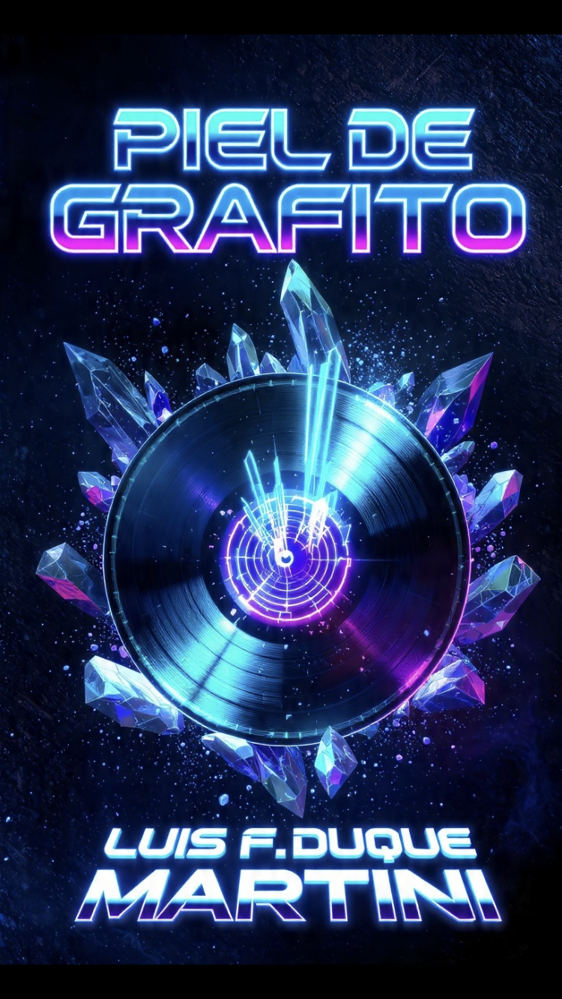
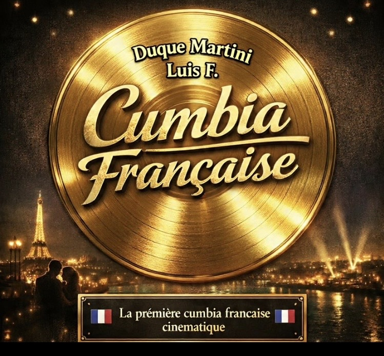

⚡AUDIO LAB EXPERIMENTAL⚡️
Un sistema sonoro en evolución constante.
No es un álbum tradicional✨— es un entorno de creación activa✨
💥Aquí convergen:
• síntesis digital avanzada
• cumbia híbrida franco-latinoamericana
• estructuras rítmicas no convencionales
• texturas electrónicas en tiempo real
Cada pista es una iteración del laboratorio.🔬
---
🔥 ACCESO COMPLETO AL SISTEMA SONORO
Descargas exclusivas + versiones completas + nuevos lanzamientos en desarrollo.
🏃♂️➡️Acceso directo en Patreon 👇
💿 Entrar al laboratorio completo
